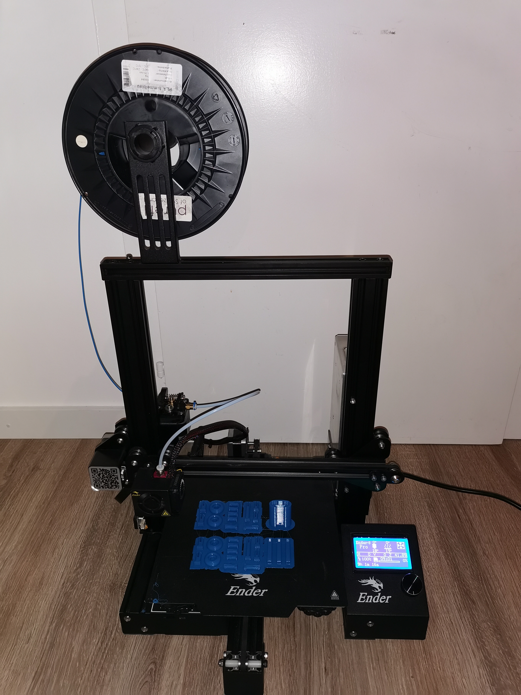
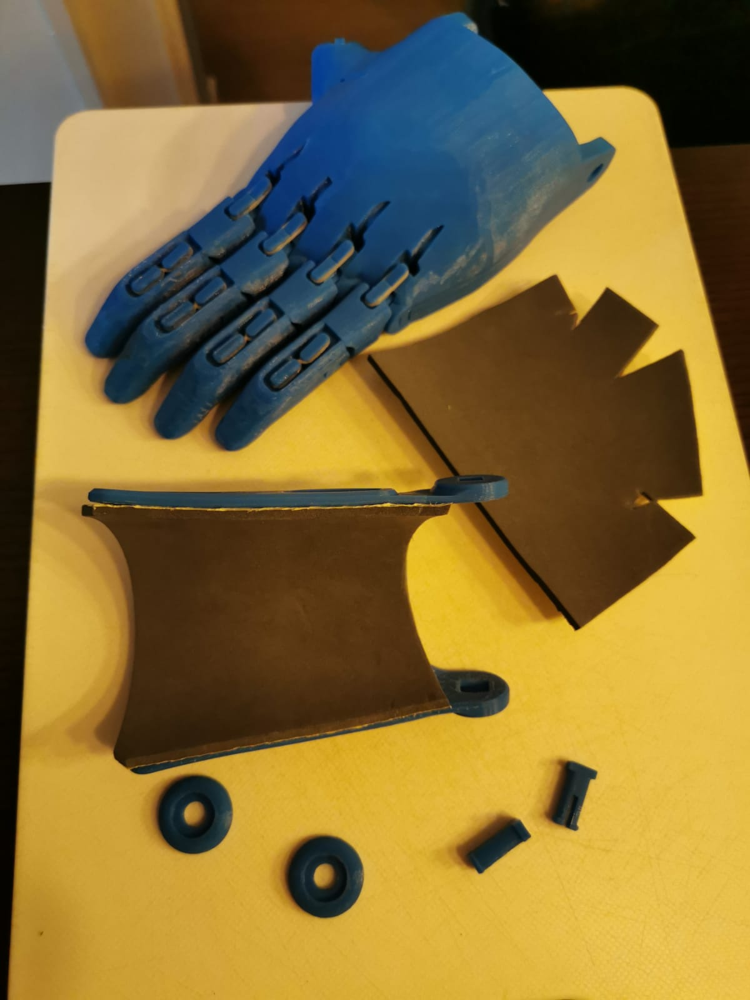
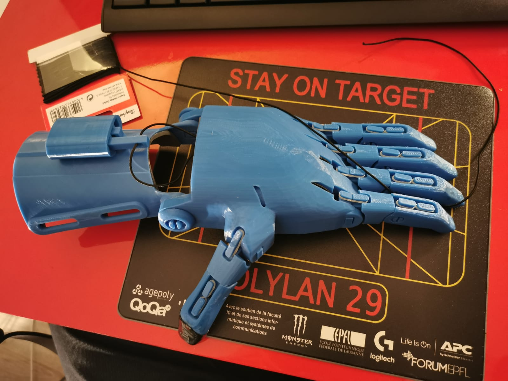
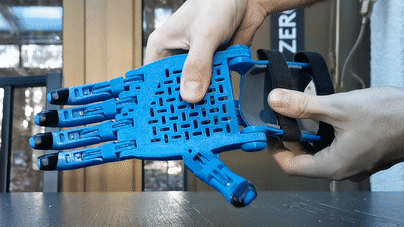
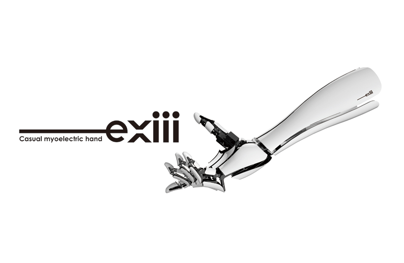

Development of a 3D printed Hand Prosthesis
A small DIY project
The project
My goal for this project was to make a first 3D printed hand, simply mechanical. The association e-Nable proposed several models and I came across this association during my research. e-Nable is an association which proposes to put in relation children looking for a prosthesis and "makers" who would realize these prostheses voluntarily.
To be part of this association, you have to make a "test hand" like the one I made below and submit it for validation. This test hand is purely mechanical and uses a system of elastic and nylon cables to function, as you can see in the GIF video below. I've gathered below pictures of different steps of test hand realization, it includes 3D printing of parts (upscaled to 130%), assembly, cutting and foam installation, rubber bands and scratch.
Printing the pieces
Cutting and gluing foam
Installation of cables and elastics
The prosthesis in action
In the future
The next hand I want to make is either the Exii Hackberry hand or something easier to start with, because it would allow me to code a command to be able to link it to the EEG headset. However, this hand is much more difficult to make, so it will be a while before I post something about it.
